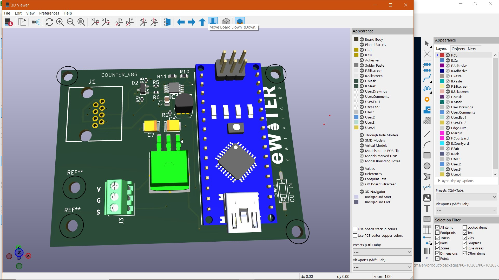
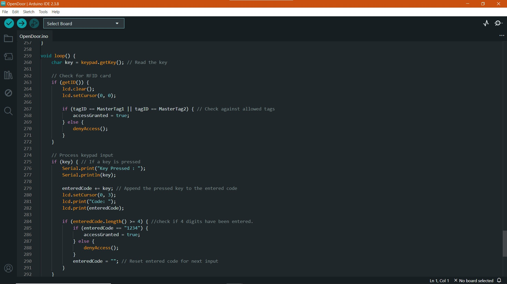

Skills
Technical Expertise
Technical Core
- Firmware Development (C/C++, Bare-Metal, RTOS)
- Hardware Interfacing (I2C, SPI, UART, CAN Bus)
- Microcontroller Architecture (ARM Cortex, STM32, ESP32)
- Low-Level Debugging (JTAG, GDB, Oscilloscopes)
PCB Design & Hardware
- Schematic Capture & PCB Layout (KiCad, Altium, Eagle)
- Multi-layer PCB Design (Signal Integrity & EMI/EMC)
- Prototyping & Assembly (SMD Soldering, BOM Management)
- Hardware Validation (Simulation & Power Analysis)
System Design
- RTOS Implementation (FreeRTOS, Zephyr, ThreadX)
- Memory Optimization & Power Management
- Bootloaders & OTA Updates
Connectivity & IoT
- Wireless Protocols (BLE, Wi-Fi, Zigbee, LoRaWAN)
- IoT Messaging (MQTT, HTTP, CoAP)
- Industrial Communication (RS485, Modbus)
- Cloud-Connected Embedded Systems
Projects

" alt="RS485 Transreceiver flow_Sensor pulse counter">
RS485 Transreceiver flow_Sensor pulse counter
I designed a custom PCB for e-water services that integrates a flow sensor with an MCU-based monitoring system. I implemented a hardware interrupt routine to capture high-precision pulse data from the sensor, ensuring accurate consumption tracking. To support industrial deployments, I integrated an RS485 transceiver to convert UART signals into differential pairs, allowing for reliable, long-distance data transmission in electrically noisy environments.
RS485
Automation
Embedded C

" alt="SMARTHOME">
SMARTHOME Automation
I prototyped and actualized an integrated home automation and safety system to control curtains, lighting, fans, and environmental monitoring. I engineered the control logic using ESP32 and Arduino, utilizing L298N drivers for motorized curtains, relay modules for fan control, and PWM for lighting dimming. To ensure home safety, I integrated MQ-series gas sensors and optical smoke detectors, implementing an interrupt-driven alert system that triggers audible alarms and sends instant mobile notifications via MQTT when hazardous levels are detected.
SIM800L
Arduino
Motor Control
 " alt="TRANSRECEIVER">
" alt="TRANSRECEIVER">
RS485 Tank Monitoring
I designed a power-switching interface board that utilizes RS485 for robust, long-distance communication with an external controller. To ensure system reliability and protection, I implemented optocouplers to provide high-voltage galvanic isolation between the control logic and the power stage. The board features a custom NPN-PMOS switching logic that allows a low-power MCU signal to efficiently drive a 12V output for high-current loads. This design prioritizes signal integrity and electrical safety, making it ideal for industrial actuation and remote power distribution.
RS485
Ultrasonic
ESP32
Contact
Interested in embedded systems, PCB design,
firmware, or automation projects? Let’s connect.
Email: kennygithaiga@gmail.com
GitHub:
github.com/yourgithub
Technical Expertise
Technical Core
- Firmware Development (C/C++, Bare-Metal, RTOS)
- Hardware Interfacing (I2C, SPI, UART, CAN Bus)
- Microcontroller Architecture (ARM Cortex, STM32, ESP32)
- Low-Level Debugging (JTAG, GDB, Oscilloscopes)
PCB Design & Hardware
- Schematic Capture & PCB Layout (KiCad, Altium, Eagle)
- Multi-layer PCB Design (Signal Integrity & EMI/EMC)
- Prototyping & Assembly (SMD Soldering, BOM Management)
- Hardware Validation (Simulation & Power Analysis)
System Design
- RTOS Implementation (FreeRTOS, Zephyr, ThreadX)
- Memory Optimization & Power Management
- Bootloaders & OTA Updates
Connectivity & IoT
- Wireless Protocols (BLE, Wi-Fi, Zigbee, LoRaWAN)
- IoT Messaging (MQTT, HTTP, CoAP)
- Industrial Communication (RS485, Modbus)
- Cloud-Connected Embedded Systems
Projects

" alt="RS485 Transreceiver flow_Sensor pulse counter">RS485 Transreceiver flow_Sensor pulse counter
I designed a custom PCB for e-water services that integrates a flow sensor with an MCU-based monitoring system. I implemented a hardware interrupt routine to capture high-precision pulse data from the sensor, ensuring accurate consumption tracking. To support industrial deployments, I integrated an RS485 transceiver to convert UART signals into differential pairs, allowing for reliable, long-distance data transmission in electrically noisy environments.

" alt="SMARTHOME">SMARTHOME Automation
I prototyped and actualized an integrated home automation and safety system to control curtains, lighting, fans, and environmental monitoring. I engineered the control logic using ESP32 and Arduino, utilizing L298N drivers for motorized curtains, relay modules for fan control, and PWM for lighting dimming. To ensure home safety, I integrated MQ-series gas sensors and optical smoke detectors, implementing an interrupt-driven alert system that triggers audible alarms and sends instant mobile notifications via MQTT when hazardous levels are detected.
RS485 Tank Monitoring
I designed a power-switching interface board that utilizes RS485 for robust, long-distance communication with an external controller. To ensure system reliability and protection, I implemented optocouplers to provide high-voltage galvanic isolation between the control logic and the power stage. The board features a custom NPN-PMOS switching logic that allows a low-power MCU signal to efficiently drive a 12V output for high-current loads. This design prioritizes signal integrity and electrical safety, making it ideal for industrial actuation and remote power distribution.
Contact
Interested in embedded systems, PCB design, firmware, or automation projects? Let’s connect.
Email: kennygithaiga@gmail.com
GitHub: github.com/yourgithub